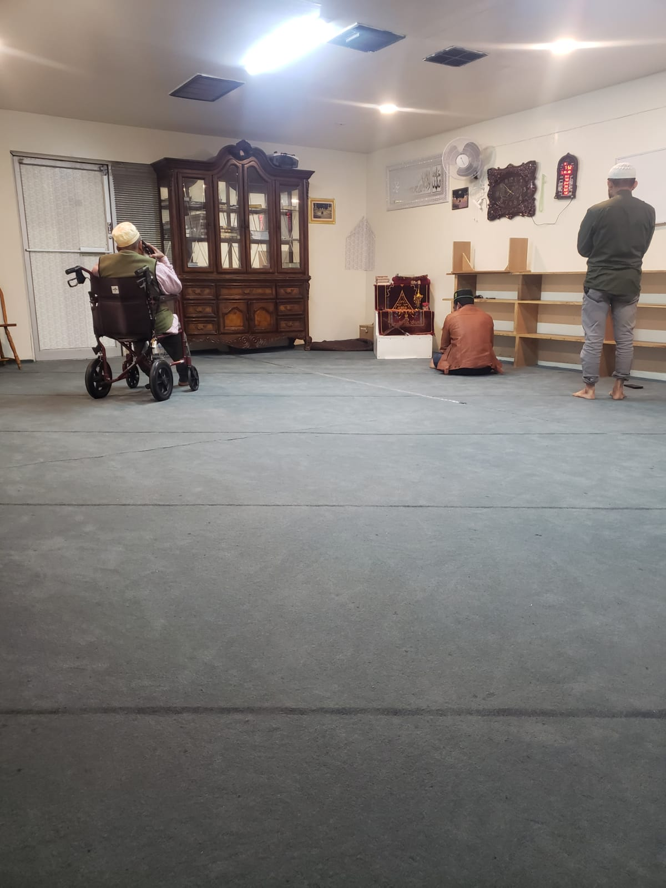
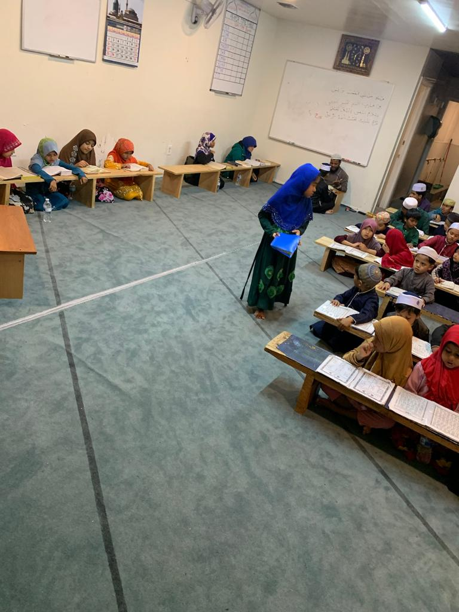
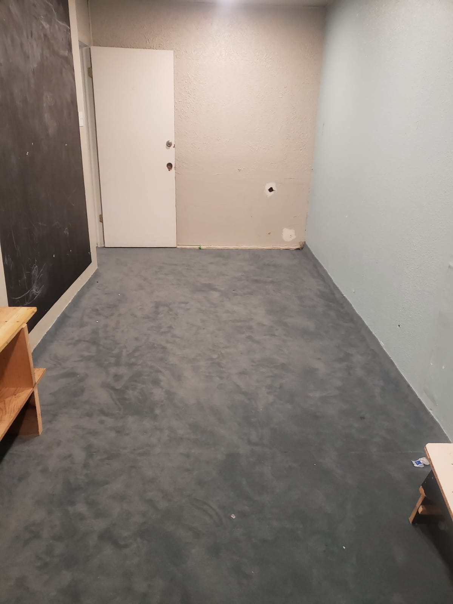

Weekend school
Islamic learning that builds a strong foundation in faith, character, and community.
Education
Programs that help children and adults connect with the Quran, Islamic knowledge, and one another.
Our approach
Masjid Arkan is committed to providing a supportive Islamic environment for students and families.
Islamic learning that builds a strong foundation in faith, character, and community.
Quran reading and memorization programs for students at every stage.
Opportunities to explore faith, ask questions, and learn together.

For our families
Our aim is to nurture lifelong learners who carry Islamic values into their homes, schools, and communities.
For current class availability, schedules, and registration, please contact the masjid.
Ask about enrollmentPhoto gallery


